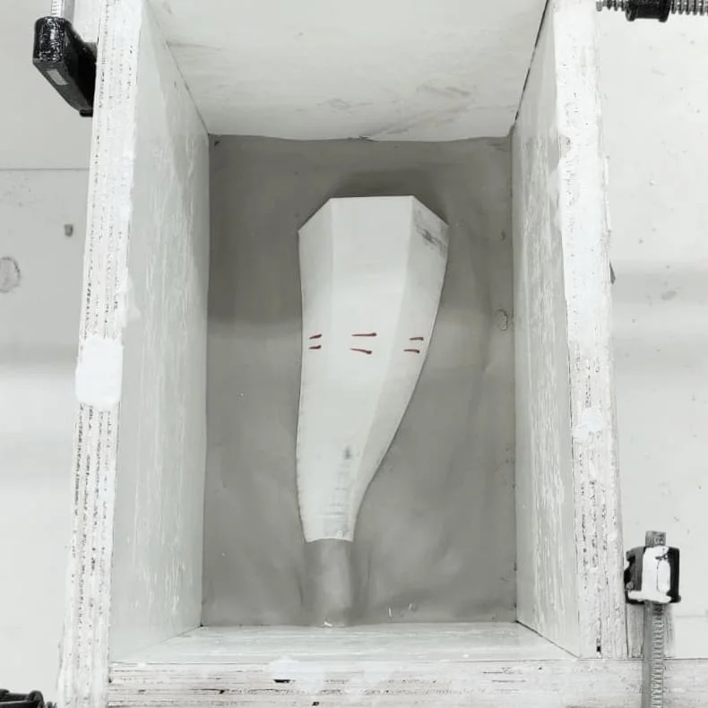

Ceramics
7-day project, from start to finish

- Project
- Ceramics Course, created in 7 days, Shenkar
- Location
- Ramat-Gan, IL
- Year
- 2019
About the project
Interesting movement from a mechanical hexagon to a more natural circle, vase for a single flower, but with interesting composition possibilities when grouped.
Expressing the possibility of human design that nurtures nature.